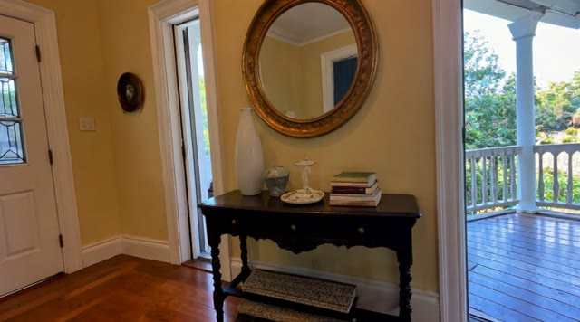
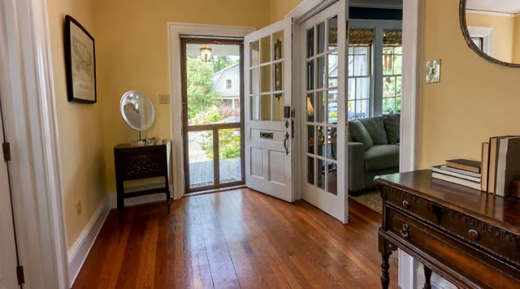

RECALL
When the camera looks back, the world model recalls what it already generated, instead of inventing it again.
Retrieval of Earlier Camera views for Long-horizon Lookback
Training-free episodic memory for an open world model
How long can a generated world hold together while an agent plays in it?
Track 4 · World Models · base model: LingBot-World2 14B (open weights) · benchmark: PlayWorld
github.com/npow/recall
Generated worlds forget what they leave behind
- A world model generates video chunk by chunk as an agent acts.
- Look away, come back: the scene has often changed.
- Objects are replaced, rooms are rebuilt, signs are re-lettered.
Question. Can an open model hold its world together for longer, without retraining it?
PlayWorld task OE036: tilt the camera up 90°, then return. The man and the dog are replaced by someone else.
PlayWorld: an agent plays inside the generated world
Geometry consistency
48 tasks
Interaction fidelity
50 tasks
In-sight evolution
30 tasks
Out-of-sight evolution
43 tasks
171 tasks · overall score = mean of the four dimension means · published scores:
First: reproduce the baseline, on all 171 tasks, twice
| LingBot-World2, as released | Geometry | Interaction | In-sight | Out-of-sight | Overall |
|---|---|---|---|---|---|
| Published (hosted service) | 2.04 | 2.13 | 1.95 | 1.16 | 1.82 |
| Our run 1 (H200 GPUs) | 2.41 | 1.84 | 1.68 | 1.47 | 1.85 [1.67, 2.04] |
| Our run 2 (H100 GPUs) | 2.36 | 1.62 | 1.81 | 1.44 | 1.81 [1.64, 1.99] |
- Open local checkpoint, the released judge prompts, rubric and aggregation.
- Overall matches the published 1.82; individual dimensions differ.
- Every later comparison is paired: same task, seed, hardware, player and judge.
Differences from the published setup, all recorded in the repo:
local checkpoint, not the hosted service · our Haiku player · Gemini preview model name · caption-only text for in-sight tasks · one seed
Where the released model breaks: one task per dimension
Geometry
GC038 · walk to the fireplace, walk back
The room is rebuilt: a different fireplace
Interaction
IF013 · row to the opposite shore
The boat never leaves the bank
In-sight
OE007 · wait and observe (shown at 4× speed)
Wagons appear from nowhere
Out-of-sight
OE036 · tilt up 90°, then return
Man and dog replaced by someone else
Stock model, frozen final run. Each of these scored 1.0 on all three judge calls. Chosen by eye as clear examples.
Key insight: the model only remembers about 4.5 seconds
- LingBot-World2 generates video a chunk at a time and looks back only at this cache.
- Turn away for longer than the window and the view you left is gone: the model invents a new one on the way back.
Our method: a training-free episodic memory
What is new: a bounded memory of the model's own earlier frames, looked up by camera pose and spliced into its attention window, with no training. Stock LingBot keeps only a fixed window.
no training, weights untouchedwindow: 6 + 10 + 8 = 24 frames (stock: 18)Storing less: keep the frame, rebuild its values on demand
| Three ways to remember one frame | Size |
|---|---|
| Cache its 40-layer values | 1,235 MB |
| The same, 8-bit | 627 MB |
| Store the frame, rebuild the values on demand | 6.2 MB ≈ 200× less |
Rebuilding 22 frames in a 14-chunk episode took 13.5 s in total. No archive on disk, GPU memory close to stock (72.4 GB against 68.8 GB).
Does it still recall?
- On a scripted turn away, hold, turn back path (scene GC007), similarity of the final frame to the start view:
- 0.35 released model, 0.78 exact storage, 0.77 store-and-rebuild.
One scene, one seed, scripted path. Not tested in the 171-task benchmark or the revisit-horizon benchmark.
Sizes measured on LingBot-World2 14B at 480×832. A second method, a text “director” that writes event captions in the model's trained format, is in the repo; it showed a small trend, not an established gain.
Look away for 12 seconds, then turn back

start view

return: as released

return: with our memory
Same scene, seed and camera path. Judge score 1.2 as released, 3.0 with memory.
Two more scenes, same test
GC034 · judge 2.0 → 4.2
Released: returns to a fence close-up.
Ours: the stone gate and hut are back.
GC026 · judge 2.4 → 4.6
Released: a different shop door.
Ours: the red awning and arched entrance are back.
Selected examples from the 20-scene benchmark on the next slide (12 s away; 2× speed, the wait sped up 5×). Losses exist too: 4 of 20 scenes at 12 s; they are in the repo's appendix.
Higher judged consistency at every absence length
pooled over 6, 12 and 24 s away
95% CI +0.51 to +1.03 · 20 unseen scenes · paired, same seed · configuration frozen before generation
| Away | Released | Ours | Difference [95% CI] | W / T / L |
|---|---|---|---|---|
| 0 s | 1.84 | 2.69 | +0.85 [+0.29, +1.45] | 13/1/6 |
| 6 s | 1.76 | 3.07 | +1.31 [+0.74, +1.89] | 17/1/2 |
| 12 s | 1.86 | 2.52 | +0.66 [+0.19, +1.12] | 14/2/4 |
| 24 s | 1.45 | 1.78 | +0.34 [+0.05, +0.64] | 12/3/5 |
Baseline: LingBot-World2 as released. Side-by-side clips: slides 9 and 10 and docs/demo/. Revisit-horizon benchmark: PlayWorld scenes with our scripted look-away-and-return path, PlayWorld's judge and rubric (mean of 2 calls). Not PlayWorld's own tasks, so not comparable with 1.82 or 2.12. Both arms decline with time away; the gain shrinks at 24 s. Our memory's window is 24 frames (stock: 18), so part of the gain may come from the larger window: a 46-frame stock cache scored about 0.82 on our scripted diagnostic.
Ablation: how small can the memory be?
Scripted turn-hold-return on one scene (GC007), similarity of the final frame to the start view, cloud H100. Recompute bar: tested on one scene so far. On a different GPU the released model itself returned on this path, so read these as an ablation, not a headline.
- Storing the values in 8-bit keeps the recall at half the size.
- We also tried shrinking the cache itself (fewer layers, pooling, low-rank): the memory stopped working.
- Store the frame and recompute: ≈ 200× smaller, same recall (tested on one scene so far).
On one of PlayWorld's own tasks
Same nine player actions in both. Released: a traffic light and a changed sign are pushed into the returning view. Ours: the arch is framed as at the start.
Where it still breaks
- Record not beaten. On the full PlayWorld benchmark our methods score 1.80–1.86: level with the published 1.82, below Genie 3's 2.12.
- Memory rarely fires on PlayWorld's own tasks. Episodes are short: only 12% of chunks revisit a view the model had already forgotten.
- The model does not undo forward motion. Walk forward and back, and the picture does not return, so there is nothing correct to recall.
- Frozen scenes and unattempted interactions are not memory problems. Most minimum scores come from these.
- What the audits taught us. Retrieving only on a verified return removed unneeded swaps (338 to 0 on 611 non-revisit chunks) but was not better on 36 real revisit tasks: −0.35 [−0.71, −0.01].
- The judge is noisy. The same video scored three times varies by 0.36 on average; identical videos have received 1.0 and 5.0.
Full tables, per-episode scores and the two audits that explain these are in the repo.
Autoresearch loop × past.dev
Lap 1
First design: no gain on 171 tasks → the audit found 3 bugs and 2 design flaws → memory rebuilt (200× less storage, removes the harm)
Lap 2
Re-test on 36 real tasks: not better, reported
- AI agents wrote the code and ran every step; a separate AI agent, not the one that wrote the code, audited it. A human set the goals and budget and made key calls (including the store-the-frame idea).
- Every run: pass criterion pre-registered, configuration frozen and committed first; per-episode scores and logs in the repo (github.com/npow/recall, reproduction/). Negative results are kept and reported.
What we would do next
- A trained, compact memory layer. A small adapter that reads a few memory tokens per past view, so the model learns to use what it is shown.
- Retrieve by what is visible, not by where the camera was told to be (as in VMem), to handle forward-and-back motion.
- Longer-horizon tasks. The benchmark's own episodes are mostly shorter than the model's memory; the interesting regime starts after it.
Take-aways
+0.77 judged consistency after looking away, on 20 unseen scenes
≈ 200× smaller memory by storing the frame and recomputing (scripted test)
Baseline reproduced on all 171 tasks: 1.81 and 1.85 against 1.82
Honest negative: no gain on PlayWorld's own short tasks
github.com/npow/recall
Built in two days · every number in these slides traces to a file in the repo